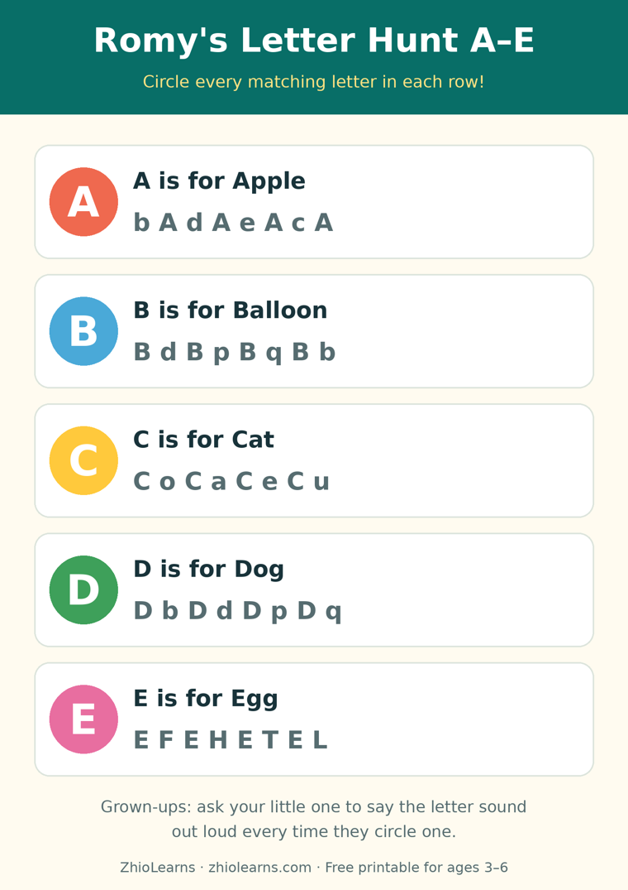

One Letter, All Week: Why Going Slow Makes the Alphabet Stick
Your four-year-old belts out the alphabet song flawlessly, complete with the traditional blurry rush through “elemenopee.” Then you point at a single letter on a cereal box — just a B, standing alone — and get a thoughtful silence.
Nothing has gone wrong. The song and the skill are two different things. The song is a melody: a string of sounds memorised in order, like a phone number set to music. Recognising one letter, out of order, on its own, in a new place — that is real letter knowledge, and it is built a completely different way.
Letters stick through meetings, not marathons
A letter becomes familiar the way a neighbour does: not by one long introduction, but by bumping into each other, briefly, again and again. One short encounter is easy to forget. Five tiny ones — the same letter, in five different places, across a few days — give a young brain five separate chances to file it away, and sleep in between to do the filing.
That is why the A-to-Z rush so often disappoints. Twenty-six letters in a week means each one gets met once, quickly, in a row — the exact conditions for forgetting all of them politely. One letter, given a whole week, gets met properly.
The one-letter week
Pick one letter — any letter; the first letter of your child’s name is a lovely place to start, but the book’s next page works just as well. Then let it keep “bumping into” your child, in moments that each take under two minutes:
Meet it. “This is B. B says buh. Bear starts with B.” Big, friendly, done.
Find it. Hunt for it together — on a book cover, a food box, a sign on your walk. Finding it in the wild counts double.
Touch it. Trace it big in the air, or with a finger on the carpet, the sofa, your palm. Letters learned by hand are remembered by hand.
Hear it. Listen together for words that start with its sound at breakfast, in the car, at bath time.
That is the whole programme. No schedule to keep, no chart to complete — if Tuesday gets busy, the letter simply bumps into your child again on Wednesday. Slow is not a compromise here. Slow is the mechanism.
What “stuck” actually looks like
You will know the letter has landed not when your child recites it on demand, but when they start announcing it, unprompted, with enormous pride: on a shop sign, on your shirt, on a lorry. That spontaneous spotting — out of order, out of context, out of nowhere — is the real milestone, and it usually arrives near the end of the letter’s week.
And when close letters get mixed up — B and D are famous neighbours — name what your child found instead of what they missed: “You found a B! It does look a lot like our D.” Neighbours get confused in every neighbourhood. Next week belongs to the new letter anyway, and the old one will keep showing up on its own.
A first ABC book built for one letter at a time
Romy’s Alphabet: A Fun and Colorful ABC was made for exactly this pace. For ages 3–6, it gives each letter one bright, friendly page of its own, paired with a picture from a child’s everyday world — so the page you read on Monday is the same letter your child hunts for on Tuesday and traces on Thursday. No drills, no pressure: point, name it, say the sound together, and let the week do the rest.
Read one page together tonight — just one. Then try the free printable below this week: a gentle letter hunt for A to E, made for exactly these small, repeated meetings.
🖨️ Free printable: Romy’s Letter Hunt A–E

Circle the matching letters, hunt through the big letter grid, and draw something that starts with A. Two pages, ages 3–6, free, no sign-up needed to print it.
Download the free printable (PDF)📚 Today’s book
Find Romy’s Alphabet: A Fun and Colorful ABC and Romy’s other books in our little shop — and read Romy’s Alphabet Picnic free in the Storytime section.
See Romy’s books →🌿 More from the Parent Corner
“Find all the red round things” is two jobs at once for a three-year-old. Our previous article shows how sorting by one rule at a time makes the pile suddenly work.
Sort by One Thing at a Time →